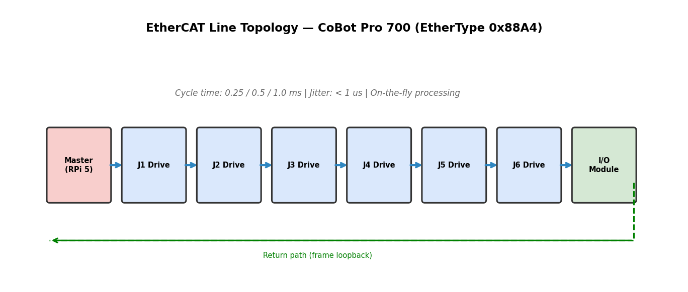
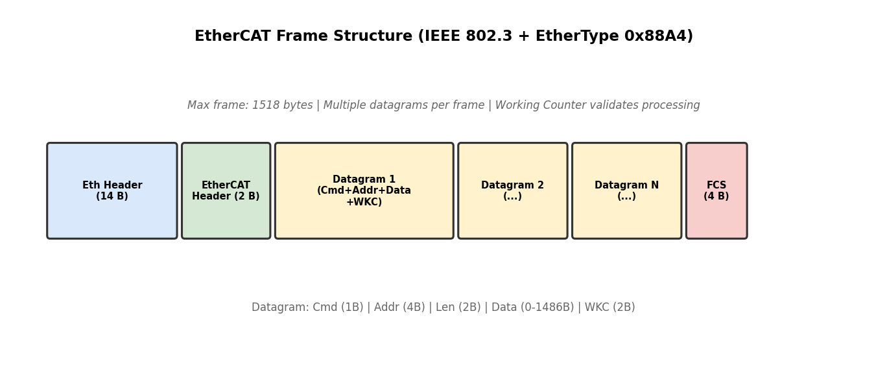
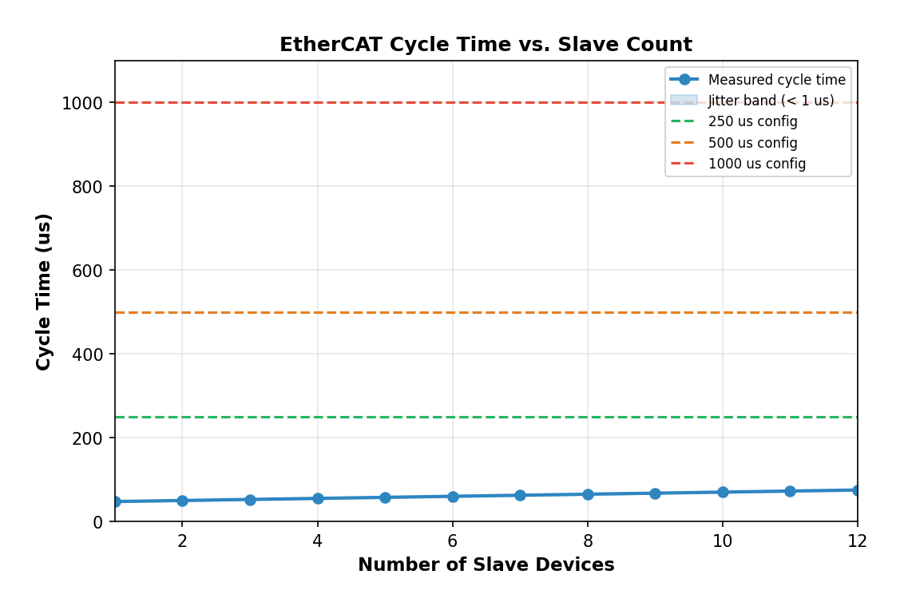

This document specifies the EtherCAT communication stack implementation used in the Contoso Robotics CoBot Pro 500 and CoBot Pro 700 collaborative robots. EtherCAT serves as the primary real-time fieldbus connecting the main controller to six joint servo drives, the optional Force-Torque Sensor FTS-600, and the Safety Controller SC-100 process data interface. For information on the ROS 2 bridge that exposes EtherCAT data to ROS 2 topics, refer to the ROS 2 Integration Guide in the Support documentation. For diagnosing communication errors and joint faults, see the Joint Error Troubleshooting Guide in the Support documentation.

The CoBot Pro EtherCAT network uses a line topology with optional ring redundancy:
The physical layer uses 100BASE-TX Ethernet (100 Mbit/s, full-duplex) over CAT6a shielded cables with M12 D-coded connectors (IP67) at each joint. Maximum cable length between any two slaves: 10 m. Total bus length: 60 m maximum.
When the optional ring-redundancy cable is installed (connecting the last slave's OUT port back to the master's secondary Ethernet port), the network can tolerate a single cable break or slave failure without losing communication to the remaining slaves. Failover time is less than 15 µs — within a single EtherCAT cycle — ensuring no disruption to the motion control loop. The master detects the break via Working Counter (WKC) mismatch and reconfigures the logical addressing to route frames through the redundant path.

EtherCAT operates by embedding process data directly into standard Ethernet frames (EtherType 0x88A4). Each frame contains one or more datagrams:
| Field | Size (bytes) | Description |
|---|---|---|
| Preamble + SFD | 8 | Standard Ethernet preamble |
| Destination MAC | 6 | Broadcast (FF:FF:FF:FF:FF:FF) or multicast |
| Source MAC | 6 | Master MAC address |
| EtherType | 2 | 0x88A4 (EtherCAT) |
| EtherCAT Header | 2 | Frame length (11 bits) + reserved + type |
| Datagram(s) | Variable | 1–15 datagrams per frame (see below) |
| Padding | Variable | Minimum Ethernet frame size: 64 bytes |
| FCS | 4 | CRC-32 Frame Check Sequence |
| Field | Size (bytes) | Description |
|---|---|---|
| Command | 1 | LRD (Logical Read), LWR (Logical Write), LRW (Logical Read-Write), BRD, BWR, etc. |
| Index | 1 | Datagram sequence number for identification |
| Address | 4 | Logical address (32-bit) mapped to slave FMMU |
| Length | 2 | Data payload length (11 bits) + flags |
| IRQ | 2 | Interrupt request register |
| Data | Variable | Process data (read/written on the fly by slaves) |
| Working Counter | 2 | Incremented by each slave that successfully processes the datagram |
For the CoBot Pro's 6-joint configuration, the master sends a single LRW datagram per cycle containing the output process data image (252 bytes: 42 bytes × 6 joints). Each joint's servo drive reads its 42 bytes (target position, velocity feedforward, torque feedforward, control word) and writes back its 42 bytes (actual position, actual velocity, actual torque, status word) — all within the same frame as it passes through the slave ESC at wire speed.
The CoBot Pro uses the CANopen over EtherCAT (CoE) application protocol per ETG.6010, implementing the CiA 402 drive profile for all joint servo drives:
| Index:Sub | Name | PDO Mapping |
|---|---|---|
| 0x6040:00 | Control Word | RxPDO |
| 0x607A:00 | Target Position (encoder counts) | RxPDO |
| 0x60FF:00 | Target Velocity (counts/s) | RxPDO |
| 0x6071:00 | Target Torque (0.1% rated) | RxPDO |
| 0x6041:00 | Status Word | TxPDO |
| 0x6064:00 | Actual Position (encoder counts) | TxPDO |
| 0x606C:00 | Actual Velocity (counts/s) | TxPDO |
| 0x6077:00 | Actual Torque (0.1% rated) | TxPDO |
EtherCAT Distributed Clocks (DC) synchronize all slaves to a common time base, critical for coordinated multi-axis motion:

The CoBot Pro supports three cycle time settings, configurable via CoBot OS v4.2 (Settings → Communication → EtherCAT → Cycle Time):
| Cycle Time | Use Case | Max Slaves | Master CPU Load (A72) |
|---|---|---|---|
| 1.0 ms (default) | Standard collaborative operations | 16 | 12% |
| 0.5 ms | High-speed pick-and-place, force control | 12 | 22% |
| 0.25 ms | Ultra-high-bandwidth torque control, vibration suppression | 8 | 38% |
The cycle time determines the servo loop update rate, trajectory interpolation resolution, and the maximum number of EtherCAT slaves that can be served within one cycle (constrained by frame propagation time and slave processing delay). At 0.25 ms, the frame round-trip time for 8 slaves is approximately 45 µs, leaving 205 µs for master-side motion planning computation.
The EtherCAT master monitors bus health using the following mechanisms:
For a complete list of EtherCAT-related error codes and troubleshooting steps, refer to the Joint Error Troubleshooting Guide in the Support documentation.
Document version 4.2.0 | Last updated: 2025-01-14 | Contoso Robotics Engineering — Controls Team